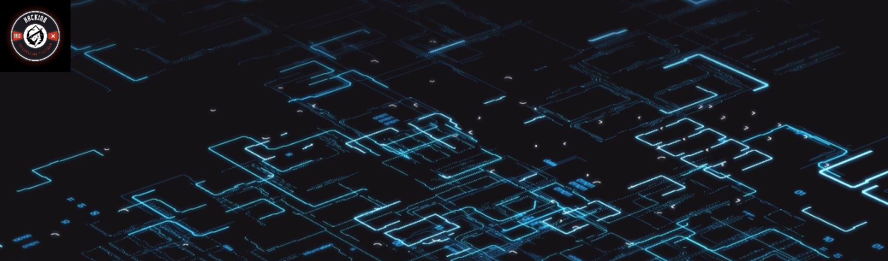

Introduction
The internet is home to the biggest information sharing network ever created with billions of devices that communicate across the globe. In developed economies, the average person now owns multiple devices, which are essential to most aspects of daily life. In this digital landscape, everyone is susceptible to getting hacked. Cyber attacks impact large technology companies, financial institutions, media organizations, dating websites, political parties, small companies, and individuals just like us.
Cybersecurity is important because of the unprecedented amounts of data that we as individuals and organizations collect, store, and process on our electronic devices. As the volume and sophistication of cyber attacks grow, we are all tasked with safeguarding this information. Think about what we need to protect now and in our future!
Individual and family privacy, finances, and health
Business operations, trade secrets, and jobs
Local and national government services
Global commerce, safety, and even world peace

Welcome to this course!
Welcome to this Cybersecurity Fundamentals course! This is an introductory learning experience. It is designed to provide you with an overview of cybersecurity to get you interested in understanding this dynamic and evolving field. The purpose of this course is to provide you with:
Foundational knowledge about the field of cybersecurity
An awareness of cybersecurity career opportunities that are in high demand globally